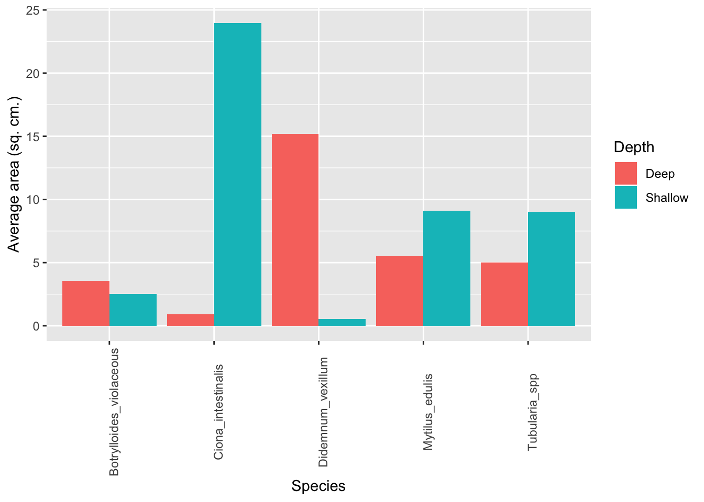

Biofouling Tutorial
Dr. Linda Auker
5/7/2019
Analysis of Community Settlement Panels
This site contains tutorials for photographing, analyzing, and visualizing data for assessing biofouling on panels.
Go to Option 1: drawing lines around organisms
Go to Option 2: using a grid to count frequency of organisms
Option 1: drawing lines around organisms
Pros: More accurate. Cons: Time-consuming, particularly for heavily settled panels.
Photographing panels
Photograph both sides of each panel clearly. The more light available and the closest you can get to the panel without cropping it out will make it easier to analyze. Use the highest resolution on your smartphone or digital camera.
Send the labeled photos to _______________ (or add to a dropbox?). Suggested labeling includes depth_side_replicate. So a shallow panel front might be Shallow_front_1, and the other side of the panel is Shallow_back_1.
Analyzing panel photographs in ImageJ
Download ImageJ, a free open-source image analysis software available from NIH, at https://imagej.nih.gov/ij/download.html.
Open the program. Go to File > Open and find your photograph in the directory. Once you open your photograph, zoom in or out as needed to ensure the entire panel is visible on your screen and you are able to see the organisms clearly.
Set the scale of your image. First, choose the “Straight Line” shape and draw a line along one edge of your panel.

Figure 1
Next, go to Analyze > Set Scale… . In the dialog box, the program gives you the distance in pixels of the line you have drawn. In “Known distance” enter the length of the panel (10) and in “Unit of length” enter the units used (cm). Click ok.
- Now you can start analyzing your panel photograph. Click freehand selection (Figure 2). Carefully, with your mouse, draw a line around a colony. Try to get as close to the edges as you can (Figure 3). If you make an error, let go of the mouse, left-click on the photograph and your line will disappear and you can try again. Now, go to Analyze > Measure. Under Area you will see the area your drawn line covers. This is the area, of your colony.

Figure 2

Figure 3
Repeat step 4 with a different colony. Notice that if you didn’t close the “Results” dialog box, your first measurements are still there.
Repeat until you have measured all species on the panel.
It’s very likely you will have more than one colony of the same species, or more than one area value for the same species. Make sure to add these up before recording on your spreadsheet for analysis. For example, for one colony of Botrylloides violaceous, you may have an area value of 4.35. For another colony of this species, the area is 1.53. Therefore, the total area is 5.88.
Recording data in a spreadsheet
Record your data in a spreadsheet. You will want to include Date, Panel number and identification, side, depth, species, and area for variables. Figure 4 below shows a suggested format for data entry. (DMC = Darling Marine Center)

Figure 4
Visualizing data
- Be sure to save your spreadsheet as a .csv file before analyzing your data.
- I use R and RStudio to visualize and analyze data. I recommend you do as well because 1) it’s free, 2) it’s flexible, and 3) it’s customizable.
- Download R and RStudio. R can be downloaded from https://www.r-project.org/. RStudio is a handy user interface and definitely recommended for beginners in the R Programming Environment. You can download RStudio here: https://www.rstudio.com/products/rstudio/download/. Download the R Studio Desktop version for free! Note: you need R to use RStudio but not vice versa. Think of RStudio as your helpful handy graphic interface to use the power of R.
- Once you have downloaded both programs, you only need to open RStudio on your computer. R will automatically run in the background. Once you have opened RStudio, you’ll see a menu and several panes. You should do two things: 1) import your data and 2) open a new R file to copy and paste the code below so you have it in one space and can reproduce your work.
- Import data: Go to File > Import Dataset > From Text(base)… Choose your dataset from where it is saved on your computer. Once you complete this step, you’ll see the window shown below. Make sure that the headers in your csv file match the ones in the window. If they do not, you might need to click Yes for Heading. Click import. When you do this, you will see a new tab open with your data.
dummy_data <- read.csv("~/Dropbox/SK_Maine_biofouling/dummy_data.csv")- Open new R file: I am going to make this simple for now and have you create a simple R Script. (I recommend for more advanced users to use R Notebook for reproducibility.) Open File > New File > R Script. This is an area where you can write code and run it. You can also write code in the console but it is not saved once you close the program. By writing and saving in the script, you can save it for future work.Try out running some code. Copy and paste the code below in your script window and then click Run in your script window.
plot(mtcars) What happened here? R has a bunch of sample data included and one of these datasets are car data that you just plotted. It doesn’t make much sense like this, but you can see that typing code and running it does something. Let’s move on to our dataset. 7. For percent cover, a simple frequency by species is probably the best way to visualize data abundance. To do this, we need to install the ggplot and dplyr packages. Then we need to set up the plot. All of the code to do this is below. Copy, paste and run, just like you did before, except, you should change the name of the dataset from dummy_data to the name you gave your csv file (this is what is shown on the tab where your data are displayed in RStudio).
What happened here? R has a bunch of sample data included and one of these datasets are car data that you just plotted. It doesn’t make much sense like this, but you can see that typing code and running it does something. Let’s move on to our dataset. 7. For percent cover, a simple frequency by species is probably the best way to visualize data abundance. To do this, we need to install the ggplot and dplyr packages. Then we need to set up the plot. All of the code to do this is below. Copy, paste and run, just like you did before, except, you should change the name of the dataset from dummy_data to the name you gave your csv file (this is what is shown on the tab where your data are displayed in RStudio).
#Install and load packages
install.packages("ggplot2",repos = "http://cran.us.r-project.org")##
## The downloaded binary packages are in
## /var/folders/zj/r4jmwdh95tdbzmx56dnk127c0000gn/T//RtmpFJVF2t/downloaded_packagesinstall.packages("dplyr", repos = "http://cran.us.r-project.org")##
## The downloaded binary packages are in
## /var/folders/zj/r4jmwdh95tdbzmx56dnk127c0000gn/T//RtmpFJVF2t/downloaded_packageslibrary(ggplot2)## Warning: package 'ggplot2' was built under R version 3.5.2library(dplyr)## Warning: package 'dplyr' was built under R version 3.5.2##
## Attaching package: 'dplyr'## The following objects are masked from 'package:stats':
##
## filter, lag## The following objects are masked from 'package:base':
##
## intersect, setdiff, setequal, union##take the mean of each species' area
avgarea <- dummy_data %>%
group_by(Species, Depth) %>%
summarise(average.area = mean(Area))
#build the plot
p <- ggplot(avgarea, aes(x=Species, y = average.area, fill = Depth)) +
geom_bar(stat = 'identity', position = 'dodge') + #dodge puts the bars next to each other
ylab("Average area (sq. cm.)")
#Fix the x axis so it is easier to read.
p + theme(axis.text.x = element_text(angle = 90)) Note the notations in the R code. Anything followed by a ‘#’ is a comment and is not run as part of the code. A tip for good programming practice is to comment often so you know what the code does. The only thing I don’t like about this graph is that it doesn’t have error bars. You might notice in the code that I calculated a mean for each
Statistical analysis
Option 2: using a grid to count frequency of organisms
Pros: Faster processing. Cons: With a sparsely populated panel, some species may be missed.